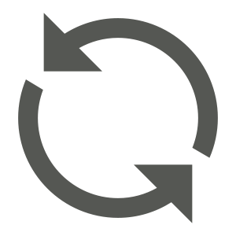

<html>
  <head>
    <script src="bower_components/platform/platform.js"></script>
    <script src="DOMSerializer.js"></script>
    <script src="hostPageHelpers.js"></script>
    <script src="evalHelper.js"></script>
    <script src="panel-orig.js"></script>
    <!--
Copyright (c) 2014 The Polymer Project Authors. All rights reserved.
This code may only be used under the BSD style license found at http://polymer.github.io/LICENSE.txt
The complete set of authors may be found at http://polymer.github.io/AUTHORS.txt
The complete set of contributors may be found at http://polymer.github.io/CONTRIBUTORS.txt
Code distributed by Google as part of the polymer project is also
subject to an additional IP rights grant found at http://polymer.github.io/PATENTS.txt
-->

<!--
`paper-tabs` is a `core-selector` styled to look like tabs. Tabs make it easy to 
explore and switch between different views or functional aspects of an app, or 
to browse categorized data sets.

Use `selected` property to get or set the selected tab.

Example:

    <paper-tabs selected="0">
      <paper-tab>TAB 1</paper-tab>
      <paper-tab>TAB 2</paper-tab>
      <paper-tab>TAB 3</paper-tab>
    </paper-tabs>

See <a href="../paper-tab/">paper-tab</a> for more information about 
`paper-tab`.

Styling tabs:

To change the sliding bar color:

    paper-tabs.pink::shadow #selectionBar {
      background-color: #ff4081;
    }

@group Quantum Paper Elements
@element paper-tabs
@extends core-selector
@homepage github.io
-->

<!--
Copyright (c) 2014 The Polymer Project Authors. All rights reserved.
This code may only be used under the BSD style license found at http://polymer.github.io/LICENSE.txt
The complete set of authors may be found at http://polymer.github.io/AUTHORS.txt
The complete set of contributors may be found at http://polymer.github.io/CONTRIBUTORS.txt
Code distributed by Google as part of the polymer project is also
subject to an additional IP rights grant found at http://polymer.github.io/PATENTS.txt
-->

<!--
@group Polymer Core Elements

`<core-selector>` is used to manage a list of elements that can be selected.

The attribute `selected` indicates which item element is being selected.
The attribute `multi` indicates if multiple items can be selected at once.
Tapping on the item element would fire `core-activate` event. Use
`core-select` event to listen for selection changes.

Example:

    <core-selector selected="0">
      <div>Item 1</div>
      <div>Item 2</div>
      <div>Item 3</div>
    </core-selector>

`<core-selector>` is not styled. Use the `core-selected` CSS class to style the selected element.

    <style>
      .item.core-selected {
        background: #eee;
      }
    </style>
    ...
    <core-selector>
      <div class="item">Item 1</div>
      <div class="item">Item 2</div>
      <div class="item">Item 3</div>
    </core-selector>

@element core-selector
@status stable
@homepage github.io
-->

<!--
Fired when an item's selection state is changed. This event is fired both
when an item is selected or deselected. The `isSelected` detail property
contains the selection state.

@event core-select
@param {Object} detail
  @param {boolean} detail.isSelected true for selection and false for deselection
  @param {Object} detail.item the item element
-->
<!--
Fired when an item element is tapped.

@event core-activate
@param {Object} detail
  @param {Object} detail.item the item element
-->

<!--
Copyright (c) 2014 The Polymer Project Authors. All rights reserved.
This code may only be used under the BSD style license found at http://polymer.github.io/LICENSE.txt
The complete set of authors may be found at http://polymer.github.io/AUTHORS.txt
The complete set of contributors may be found at http://polymer.github.io/CONTRIBUTORS.txt
Code distributed by Google as part of the polymer project is also
subject to an additional IP rights grant found at http://polymer.github.io/PATENTS.txt
-->

<script src="bower_components/polymer/polymer.js"></script>
<!--
Copyright (c) 2014 The Polymer Project Authors. All rights reserved.
This code may only be used under the BSD style license found at http://polymer.github.io/LICENSE.txt
The complete set of authors may be found at http://polymer.github.io/AUTHORS.txt
The complete set of contributors may be found at http://polymer.github.io/CONTRIBUTORS.txt
Code distributed by Google as part of the polymer project is also
subject to an additional IP rights grant found at http://polymer.github.io/PATENTS.txt
-->

<polymer-element name="polymer-body" extends="body" assetpath="bower_components/polymer/">

</polymer-element>

<!--<link rel="import" href="../polymer-dev/polymer.html">--> 
<!--
Copyright (c) 2014 The Polymer Project Authors. All rights reserved.
This code may only be used under the BSD style license found at http://polymer.github.io/LICENSE.txt
The complete set of authors may be found at http://polymer.github.io/AUTHORS.txt
The complete set of contributors may be found at http://polymer.github.io/CONTRIBUTORS.txt
Code distributed by Google as part of the polymer project is also
subject to an additional IP rights grant found at http://polymer.github.io/PATENTS.txt
-->
<!--
@group Polymer Core Elements

The `<core-selection>` element is used to manage selection state. It has no
visual appearance and is typically used in conjunction with another element.
For example, [core-selector](../core-selector)
use a `<core-selection>` to manage selection.

To mark an item as selected, call the `select(item)` method on 
`<core-selection>`. The item itself is an argument to this method.

The `<core-selection>`element manages selection state for any given set of
items. When an item is selected, the `core-select` event is fired.

The attribute `multi` indicates if multiple items can be selected at once.
  
Example:
 
    <polymer-element name="selection-example">
       <template>
         <style>
           polyfill-next-selector { content: ':host > .selected'; }
           ::content > .selected {
             font-weight: bold;
             font-style: italic;
           }
         </style>
         <ul on-tap="{{itemTapAction}}">
           <content></content>
         </ul>
         <core-selection id="selection" multi
                         on-core-select="{{selectAction}}"></core-selection>
       </template>
       <script>
         Polymer('selection-example', {
           itemTapAction: function(e, detail, sender) {
             this.$.selection.select(e.target);
           },
           selectAction: function(e, detail, sender) {
             detail.item.classList.toggle('selected', detail.isSelected);
           }
         });
       </script>
    </polymer-element>

    <selection-example>
      <li>Red</li>
      <li>Green</li>
      <li>Blue</li>
    </selection-example>
 
@element core-selection
-->

<!--
Fired when an item's selection state is changed. This event is fired both
when an item is selected or deselected. The `isSelected` detail property
contains the selection state.

@event core-select
@param {Object} detail
  @param {boolean} detail.isSelected true for selection and false for de-selection
  @param {Object} detail.item the item element
-->


<polymer-element name="core-selection" attributes="multi" hidden assetpath="bower_components/core-selection/">
  
</polymer-element>


<polymer-element name="core-selector" attributes="selected multi valueattr selectedClass selectedProperty selectedAttribute selectedItem selectedModel selectedIndex notap target itemsSelector activateEvent" assetpath="bower_components/core-selector/">

  <template>
    <core-selection id="selection" multi="{{multi}}" on-core-select="{{selectionSelect}}"></core-selection>
    <content id="items" select="*"></content>
  </template>

  
</polymer-element>

<!--
Copyright (c) 2014 The Polymer Project Authors. All rights reserved.
This code may only be used under the BSD style license found at http://polymer.github.io/LICENSE.txt
The complete set of authors may be found at http://polymer.github.io/AUTHORS.txt
The complete set of contributors may be found at http://polymer.github.io/CONTRIBUTORS.txt
Code distributed by Google as part of the polymer project is also
subject to an additional IP rights grant found at http://polymer.github.io/PATENTS.txt
-->

<!--
`paper-tab` is styled to look like a tab.  It should be used in conjunction with
`paper-tabs`.

Example:

    <paper-tabs selected="0">
      <paper-tab>TAB 1</paper-tab>
      <paper-tab>TAB 2</paper-tab>
      <paper-tab>TAB 3</paper-tab>
    </paper-tabs>
    
Styling tab:

To change the ink color:

    .pink paper-tab::shadow #ink {
      color: #ff4081;
    }

@group Quantum Paper Elements
@element paper-tab
@homepage github.io
-->

<!--
Copyright (c) 2014 The Polymer Project Authors. All rights reserved.
This code may only be used under the BSD style license found at http://polymer.github.io/LICENSE.txt
The complete set of authors may be found at http://polymer.github.io/AUTHORS.txt
The complete set of contributors may be found at http://polymer.github.io/CONTRIBUTORS.txt
Code distributed by Google as part of the polymer project is also
subject to an additional IP rights grant found at http://polymer.github.io/PATENTS.txt
-->

<!--
`paper-ripple` provides a visual effect that other quantum paper elements can
use to simulate a rippling effect emanating from the point of contact.  The
effect can be visualized as a concentric circle with motion.

Example:

    <paper-ripple></paper-ripple>

`paper-ripple` listens to "down" and "up" events so it would display ripple
effect when touches on it.  You can also defeat the default behavior and 
manually route the down and up actions to the ripple element.  Note that it is
important if you call downAction() you will have to make sure to call upAction()
so that `paper-ripple` would end the animation loop.

Example:

    <paper-ripple id="ripple" style="pointer-events: none;"></paper-ripple>
    ...
    downAction: function(e) {
      this.$.ripple.downActon({x: e.x, y: e.y});
    },
    upAction: function(e) {
      this.$.ripple.upAction();
    }

Styling ripple effect:

  Use CSS color property to style the ripple:

    paper-ripple {
      color: #4285f4;
    }

  Note that CSS color property is inherited so it is not required to set it on
  the `paper-ripple` element directly.

Apply `recenteringTouch` class to make the recentering rippling effect.

    <paper-ripple class="recenteringTouch"></paper-ripple>

Apply `circle` class to make the rippling effect within a circle.

    <paper-ripple class="circle"></paper-ripple>

@group Paper Elements
@element paper-ripple
@homepage github.io
-->


<polymer-element name="paper-ripple" attributes="initialOpacity opacityDecayVelocity" assetpath="bower_components/paper-ripple/">
<template>

  <style>

    :host {
      display: block;
      position: relative;
    }

    #canvas {
      pointer-events: none;
      position: absolute;
      top: 0;
      left: 0;
      width: 100%;
      height: 100%;
    }

    :host(.circle) #canvas {
      border-radius: 50%;
    }

  </style>

</template>

</polymer-element>


<polymer-element name="paper-tab" attributes="noink" assetpath="bower_components/paper-tabs/">
<template>

  <style>/*
Copyright (c) 2014 The Polymer Project Authors. All rights reserved.
This code may only be used under the BSD style license found at http://polymer.github.io/LICENSE.txt
The complete set of authors may be found at http://polymer.github.io/AUTHORS.txt
The complete set of contributors may be found at http://polymer.github.io/CONTRIBUTORS.txt
Code distributed by Google as part of the polymer project is also
subject to an additional IP rights grant found at http://polymer.github.io/PATENTS.txt
*/

:host {
  display: block;
  position: relative;
  overflow: hidden;
}

#tabContainer {
  position: absolute;
  top: 0;
  right: 0;
  bottom: 0;
  left: 0;
}

.tab-content {
  transition: opacity .1s cubic-bezier(0.4, 0.0, 1, 1), color .1s cubic-bezier(0.4, 0.0, 1, 1);
  cursor: default;
  pointer-events: none;
}

:host(:not(.core-selected)) > .tab-content {
  opacity: 0.6;
}

#ink {
  position: absolute;
  top: 0;
  right: 0;
  bottom: 0;
  left: 0;
  color: #ffff8d;
}

:host[noink] #ink {
  pointer-events: none;
}

:host-context(paper-tabs[noink]) #ink {
  pointer-events: none;
}
</style>
  
  <div id="tabContainer" center-justified="" center="" horizontal="" layout="">
  
    <div class="tab-content"><content></content></div>
    <paper-ripple id="ink" initialopacity="0.95" opacitydecayvelocity="0.98"></paper-ripple>
    
  </div>
  
</template>

</polymer-element>


<polymer-element name="paper-tabs" extends="core-selector" attributes="noink nobar" assetpath="bower_components/paper-tabs/">
<template>

  <style>/*
Copyright (c) 2014 The Polymer Project Authors. All rights reserved.
This code may only be used under the BSD style license found at http://polymer.github.io/LICENSE.txt
The complete set of authors may be found at http://polymer.github.io/AUTHORS.txt
The complete set of contributors may be found at http://polymer.github.io/CONTRIBUTORS.txt
Code distributed by Google as part of the polymer project is also
subject to an additional IP rights grant found at http://polymer.github.io/PATENTS.txt
*/

:host {
  display: block;
  position: relative;
  font-size: 14px;
  font-weight: 500;
  height: 48px;
}

#tabsContainer {
  position: absolute;
  top: 0;
  right: 0;
  bottom: 0;
  left: 0;
  white-space: nowrap;
}

#selectionBar {
  position: absolute;
  height: 2px;
  bottom: 0;
  left: 0;
  width: 0;
  background-color: #ffff8d;
  transition: width, left;
}

#selectionBar[hidden] {
  display: hidden;
}

#selectionBar.expand {
  transition-duration: 0.15s;
  transition-timing-function: cubic-bezier(0.4, 0.0, 1, 1);
}

#selectionBar.contract {
  transition-duration: 0.1s;
  transition-timing-function: cubic-bezier(0.0, 0.0, 0.2, 1);
}

polyfill-next-selector { content: '#tabsContainer > *:not(#selectionBar)'; }
::content > * {
  -ms-flex: 1;
  -webkit-flex: 1;
  flex: 1;
}
</style>
  
  <div id="tabsContainer" horizontal="" layout="">
  
    <shadow></shadow>
    <div id="selectionBar" hidden?="{{nobar}}" on-transitionend="{{barTransitionEnd}}"></div>
    
  </div>
    
</template>

</polymer-element>

    
<!--Creates a double pane with a splitter in between-->

<!--
Copyright (c) 2014 The Polymer Project Authors. All rights reserved.
This code may only be used under the BSD style license found at http://polymer.github.io/LICENSE.txt
The complete set of authors may be found at http://polymer.github.io/AUTHORS.txt
The complete set of contributors may be found at http://polymer.github.io/CONTRIBUTORS.txt
Code distributed by Google as part of the polymer project is also
subject to an additional IP rights grant found at http://polymer.github.io/PATENTS.txt
-->

<!--
`core-splitter` provides a spilt bar and dragging on the split bar
will resize the sibling element.  Use its `direction` property to indicate
which sibling element to be resized and the orientation.  Usually you would want
to use `core-splitter` along with flex layout so that the other sibling
element can be _flexible_.

Example:

    <div horizontal layout>
      <div>left</div>
      <core-splitter direction="left"></core-splitter>
      <div flex>right</div>
    </div>
    
In the above example, dragging the splitter will resize the _left_ element.  And
since the parent container is a flexbox and the _right_ element has 
`flex`, the _right_ elemnt will be auto-resized.

For horizontal splitter set `direction` to "up" or "down".

Example:

    <div vertical layout>
      <div>top</div>
      <core-splitter direction="up"></core-splitter>
      <div flex>bottom</div>
    </div>

@group Polymer Core Elements
@element core-splitter
@homepage github.io
-->


<polymer-element name="core-splitter" attributes="direction locked" on-trackstart="{{trackStart}}" on-track="{{track}}" assetpath="bower_components/core-splitter/">
    
<template>

  <style>/*
Copyright (c) 2014 The Polymer Project Authors. All rights reserved.
This code may only be used under the BSD style license found at http://polymer.github.io/LICENSE.txt
The complete set of authors may be found at http://polymer.github.io/AUTHORS.txt
The complete set of contributors may be found at http://polymer.github.io/CONTRIBUTORS.txt
Code distributed by Google as part of the polymer project is also
subject to an additional IP rights grant found at http://polymer.github.io/PATENTS.txt
*/

:host {
  display: block;
  width: 12px;
  background: #efefef url(bower_components/core-splitter/handle.svg) no-repeat center;
  box-shadow: inset 0 0 2px 1px #ccc;
  cursor: col-resize;
}
  
:host(.horizontal) {
  width: auto;
  height: 12px;
  cursor: row-resize;
  background-image: url(bower_components/core-splitter/handle-h.svg);
}
  
:host(:hover, :active) {
  background-color: #ddd;
}</style>
  
</template>

</polymer-element>


<polymer-element name="split-pane" assetpath="split-pane/">
  <template>
    <style>
      #content {
        display: flex;
        flex-direction: row;
      }
      #left {
        width: 60%;
        height: 100%;
        overflow: auto;
      }
      #right {
        height: 100%;
        overflow: auto;
        flex: 1;
      }
    </style>
    <div horizontal="" layout="" id="content">
      <div id="left">
        <content select=".split-pane-left"></content>
      </div>
      <core-splitter></core-splitter>
      <div id="right">
        <content select=".split-pane-right"></content>
      </div>
    </div>
  </template>
  <script src="split-pane/split-pane.js"></script>
</polymer-element>

    

<!-- Reasons for not implementing it like object-tree:
  - The entire DOM tree is fetched at once as opposed to how objects are fetched level-by-level in object-tree
  - Information is lost and refetched everytime the object-tree is collapsed whereas here, it is not.
    DOM mutations are fewer and we are better of responding to changes

  Use:
    - declare <element-tree></element-tree>
    - tree.initFromDOMTree(treeObject)
    - tree.empty() to empty tree
    - tree.getChildTreeForKey(key) to get child tree

    Listen to:
    1. unselected : when an element is unselected (explicitly with the mouse)
    2. selected : when an element is selected
    3. highlight : when an element is hovered over
    4. unhighlight : when an element is hovered out of
-->
<polymer-element name="element-tree" attributes="indent text basewidth" constructor="ElementTree" assetpath="element-tree/">
  <template>
    <style>
      #expandBtn {
        text-align: center;
        cursor: pointer;
        width: 8px;
        height: 8px;
      }
      #thisElement {
        padding: 1px;
        -webkit-user-select: none;
      }
      #thisElement:hover {
        background-color: #C7E4ED;
      }
      #thisElement[selected] {
        background-color: rgb(178, 224, 178);
        color: white;
      }
      #name {
        font-size: 12px;
        font-family: dejavu sans mono, monospace;
        cursor: default;
        width: 96%;
        color: #C04747;
        height: 16px;
        display: inline-block;
      }
      #name[polymer] {
        color: rgb(19, 106, 185);
      }
      #name[polymer]:hover {
        color: rgb(8, 8, 231);
      }
      #name:hover {
        color: #8F1904;
      }
    </style>
    <div id="content">
      <div id="thisElement" on-mouseover="{{mouseOver}}" on-mouseout="{{mouseOut}}">
        
        <span on-click="{{toggleSelection}}" id="name">{{text}}</span>
      </div>
      <div id="childrenContent"></div>
    </div>
  </template>
  <script src="element-tree/element-tree.js"></script>
</polymer-element>

    

<!--A text label that is editable upon mouse-click-->

<polymer-element name="editable-label" attributes="width text hidden" assetpath="editable-label/">
  <template>
    <style>
      #static {
        border: 1px solid #E6F0EA;
        min-width: 10px;
        height: 13px;
        float: left;
        font-size: 12px;
        font-family: dejavu sans mono, monospace;
      }
    </style>
    <div hidden?="{{hidden}}">
      <div id="static" on-click="{{startEditing}}">{{text}}</div>
      <input id="dynamic" type="text" value="{{text}}" size="{{width}}" on-blur="{{stopEditing}}" on-keypress="{{handleKeyPress}}">
    </div>
  </template>
  <script src="editable-label/editable-label.js"></script>
</polymer-element>

<!--
  Use:
    - Declare <object-tree></object-tree>
    - tree.tree = treeObj; // Set the driving model tree object
    - Update treeObj as required and the object-tree is updated automatically

    - Listen to:
      1. object-expand : When an object is expanded
      2. object-collapse : When an object is collapsed
      3. property-changed: When a property is changed
      4. refresh-property: When a property is to be refreshed
-->
<polymer-element name="object-tree" attributes="indent basewidth" constructor="ObjectTree" assetpath="object-tree/">
  <template>
    <style>
      #content {
        white-space: nowrap;
        font-size: 12px;
        -webkit-user-select: none;
      }
      .property {
         padding: 3px;
      }
      editable-label {
        display: inline-block;
        vertical-align: middle;
      }
      .labelText {
        font-family: dejavu sans mono, monospace;
        color: rgb(19, 106, 185);
      }
      .labelText[isPolymer] {
        font-family: Courier, monospace;
        color: #6A02BF;
        font-size: 13px;
      }
      .typeText {
        color: gray;
        font-family: "Arial", Courier, monospace;
        font-size: 11px;
      }
      .expandBtn {
        text-align: center;
        cursor: pointer;
        width: 8px;
        height: 8px;
      }
      .refreshBtn {
        text-align: center;
        cursor: pointer;
        width: 10px;
        height: 10px;
      }
      .children {
        margin-left: {{baseWidth}}px;
      }
    </style>
    <!--IDs are assigned dynamically and uniquely. They serve to identify the element.-->
    <div id="content">
      <template repeat="{{prop, index in tree}}">
        <div class="property">
          
          
          <label class="labelText" id="name{{index}}" ispolymer?="{{prop.polymer}}">{{prop.name}}</label>
          <label class="typeText" hidden?="{{prop.type != &quot;object&quot; &amp;&amp; prop.type != &quot;array&quot; &amp;&amp; prop.type != &quot;function&quot;}}">&lt;{{prop.type}}&gt;</label>
          <label class="typeText" hidden?="{{!prop.published}}">&lt;published&gt;</label>
          <editable-label id="field{{index}}" text="{{prop.value}}" data-hasaccessor="{{prop.hasAccessor}}" data-name="{{prop.name}}" hidden?="{{prop.type == &quot;object&quot; || prop.type == &quot;array&quot; || prop.type == &quot;function&quot;}}">
          </editable-label>
          
        </div>
        <div class="children">
          <object-tree id="child{{index}}"></object-tree>
        </div>
      </template>
    </div>
  </template>
  <script src="object-tree/object-tree.js"></script>
</polymer-element>

    


<polymer-element name="method-list" constructor="MethodList" assetpath="method-list/">
  <template>
    <style>
      .list > * {
        font-size: 14px;
        background-color: #666;
        color: white;
        -webkit-user-select: none;
      }
      .list > * {
        height: 25px;
        line-height: 25px;
        padding: 0 20px;
      }
      .list > *.core-selected {
        background-color: #333;
      }
    </style>
    <!--TODO: Fix core-selector (it is buggy) or write your own.-->
    <core-selector class="list" multi="">
      <template repeat="{{item, index in list}}">
        <div class="{{ {&quot;core-selected&quot;: item.setBreakpoint} | tokenList }}" id="method{{index}}" hidden?="{{item.type != &quot;function&quot;}}">{{item.name}}</div>
      </template>
    </core-selector>
  </template>
  <script src="method-list/method-list.js"></script>
</polymer-element>

    <style>
      .split-pane-right {
        margin-left: 10px;
      }
      paper-tabs {
        background-color: gray;
        width: 100%;
      }
    </style>
  </head>
  <body unresolved="">
    <split-pane>
      <p class="split-pane-left">
        <element-tree></element-tree>
      </p>
      <p class="split-pane-right">
        <object-tree></object-tree>
        <method-list></method-list>
      </p>
    </split-pane>
  <script src="panel.js"></script></body>
</html>
